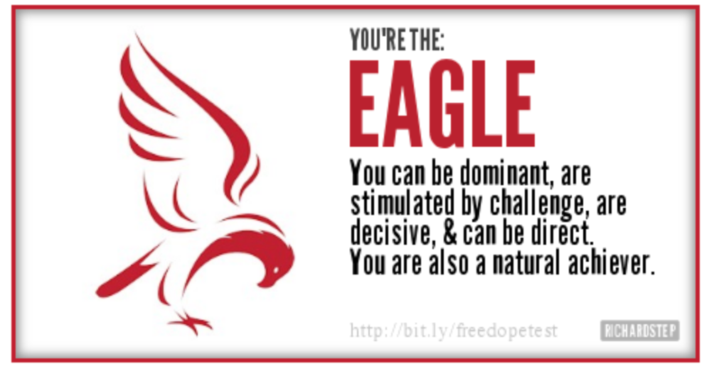
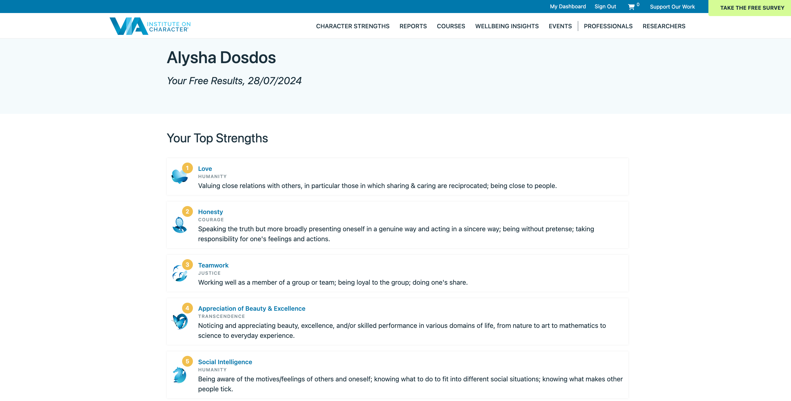

Identity Values
Explain a situation where you have made an ethical decision. Discuss how
you weighed up the values involved in that decision, the decision you
made, and how you reflect on the decision now.
I was told a secret that affects another friend at school but I ended up
telling her because I thought that I would’ve want to know if I was on her
shoes. It ended becoming a bigger deal because she brought it up to her mum
who brought it up to the dean. I still think that it was better that I told
her
Describe how your culture and the people around you have influenced your
values and identity.
-
Growing up to be the only child has led me to be quite spoilt and always
given everything without me having to ask but as a shy kid, I didn’t
really ask for much (mostly probably because I already had it)
-
Being part of the filipino community has taught me to be respectful to
other people and self aware when It comes to self image.
-
Being part of a catholic youth group has taught me a sense of
friendship, faith and confidence. It has taught me to be a leader and
has brought out my other talents such as singing.
-
Working has taught me to be efficient with doing things in the best
possible way so I that I could finish earlier and still feel like I’m
getting paid to do nothing.
Identify your strengths and how they will support you during your learning
journey.
-
I am persistent when it comes to things I care about which will help me
continue studying even when things get hard.
-
I am quite curious- once something piques my interest, I always early
try to learn more
-
Efficient- I always try to make sure that I’m saving time by doing
things the best and quickest way possible- this could be helpful when
coding
Evaluate your limitations in terms of your learning and career
development. How might these affect your learning journey?
-
I can be quite dependent on other people keeping me accountable. I can
work really well when other people’s grades are on the line but when it
comes to working for myself, I sometime might not stay motivated.
-
Might not be the most consistent when it comes to being diligent. This
could hold me back when I’m not feeling the best but as long as I have
supportive people around me, I can persevere.
Share an example of when you were trying to work productively with others,
but there was resistance or tension. Discuss strategies you tried at the
time, how effective they were, and your reflections on what other
strategies you would try now and why.
I was once working with two other girls for market day at school but they
both tend to disagree and argue often however I would be the middle man who
explained what the other was trying to say so they can understand each
other’s perspectives. This communication was important to effectively work
as a team and also compromise.
DOPE test


Strength test
